Soporte informático gestionado
Somos el departamento de informática que tu empresa no tiene, o el refuerzo del que ya tiene. Atendemos a tus usuarios cuando algo deja de funcionar, pero sobre todo trabajamos para que deje de ocurrir: monitorizamos los sistemas, aplicamos las actualizaciones, vigilamos las copias de seguridad y avisamos nosotros antes de que lo notes tú.
El servicio se contrata por meses, con un alcance escrito y un tiempo de respuesta comprometido según la criticidad de la incidencia. Cada mes recibes un informe con lo que ha pasado, lo que hemos hecho y lo que conviene prever.
- Mesa de ayuda para tus usuarios por teléfono, correo y acceso remoto.
- Asistencia presencial en Madrid y desplazamientos al resto de España.
- Monitorización de servidores, red, copias de seguridad y antivirus.
- Gestión del parque informático: inventario, renovaciones y licencias.
- Altas y bajas de empleados coordinadas con Recursos Humanos.
- Informe mensual de servicio y reunión de seguimiento periódica.
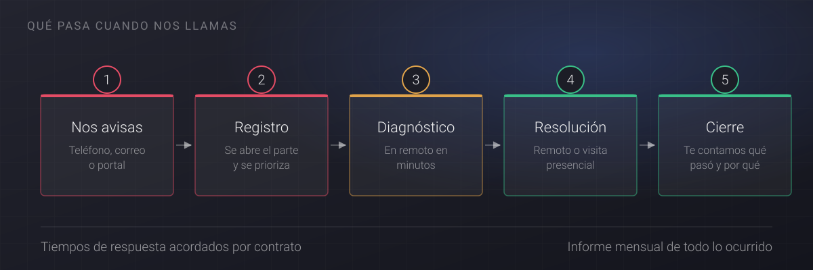
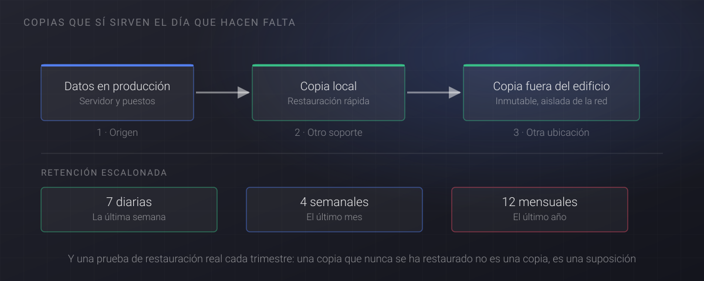
Active Directory y administración de sistemas
El directorio es la columna vertebral de una red corporativa: quién es cada usuario, a qué puede acceder y con qué reglas trabaja su equipo. Cuando está bien diseñado no se nota; cuando no lo está, se nota en todo: permisos que nadie sabe de dónde salen, cuentas de empleados que se fueron hace años y carpetas compartidas que ve más gente de la que debería.
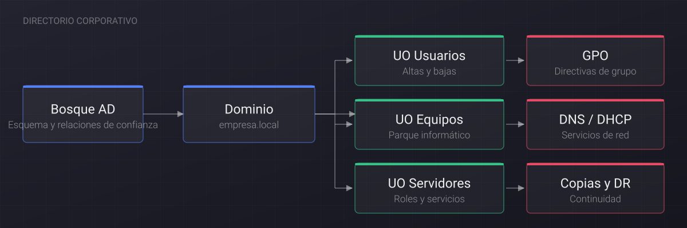
Diseñamos directorios nuevos, ordenamos los que han crecido sin control y acompañamos migraciones sin parar la actividad de la empresa.
- Diseño e implantación de bosques, dominios y unidades organizativas.
- Migraciones de dominio y elevación de niveles funcionales.
- Directivas de grupo (GPO) para estandarizar y asegurar los puestos.
- Gestión de identidades: altas, bajas, grupos y permisos con criterio.
- Servicios de red asociados: DNS, DHCP, ficheros e impresión.
- Integración con Microsoft 365 y sincronización de identidades en la nube.
- Auditoría de permisos, limpieza de cuentas y refuerzo de contraseñas.
- Copias de seguridad del directorio y plan de recuperación probado.
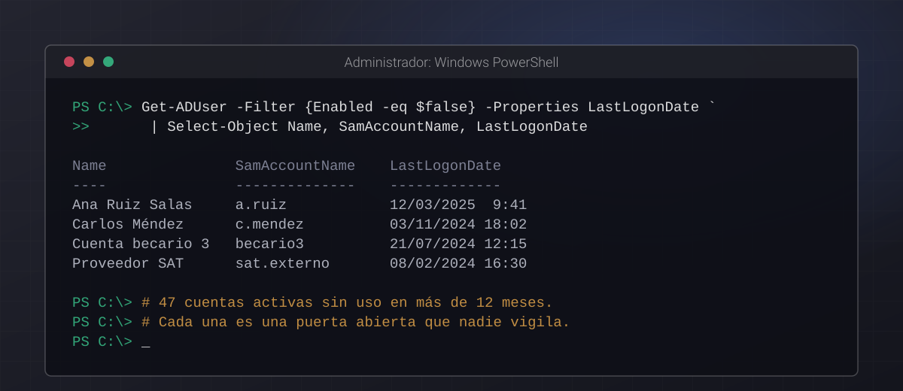
Consultoría estratégica
Muchas pymes no tienen un problema de tecnología, tienen un problema de decisiones: han ido comprando soluciones sueltas durante años y ahora nadie sabe qué se puede tocar sin romper otra cosa. Nuestro trabajo consiste en poner eso por escrito y convertirlo en un plan que se pueda ejecutar y pagar.
No vendemos hardware ni cobramos comisiones de fabricante. Eso nos permite recomendar lo que de verdad conviene, incluso cuando la recomendación es no comprar nada todavía.
- Auditoría de la situación actual: infraestructura, licencias y riesgos.
- Plan director de sistemas a 12, 24 o 36 meses, priorizado y presupuestado.
- Análisis de continuidad de negocio y plan de recuperación ante desastres.
- Acompañamiento técnico en procesos de compra y comparativa de ofertas.
- Segunda opinión independiente sobre proyectos ya en marcha.
- Definición de políticas internas de uso, acceso y seguridad.
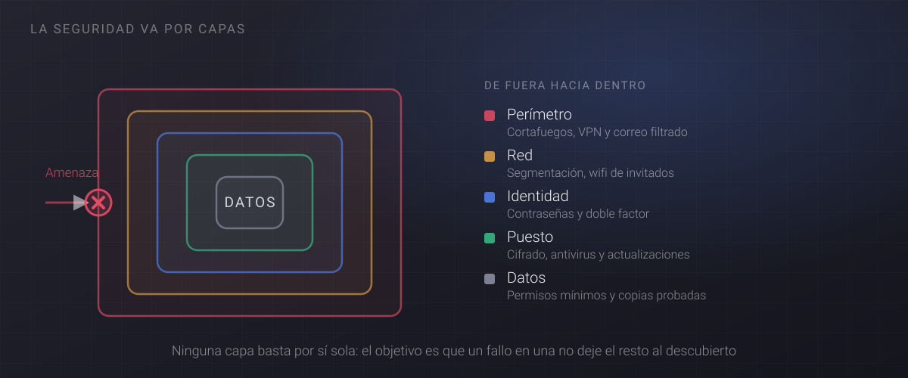
Diseño y maquetado de puestos
Una maqueta bien hecha es la diferencia entre dar de alta un equipo en veinte minutos o perder media jornada por cada empleado nuevo. Preparamos la imagen maestra de tus puestos con el sistema operativo, las aplicaciones, las políticas de seguridad y la configuración corporativa ya dentro, de modo que todos los equipos de la empresa sean iguales y predecibles.
- Imagen maestra por perfil de puesto: oficina, taller, movilidad o dirección.
- Despliegue desatendido por red para instalar muchos equipos a la vez.
- Aplicaciones, impresoras y unidades de red preconfiguradas.
- Cifrado de disco, antivirus y actualizaciones incluidos desde el minuto cero.
- Versionado y mantenimiento de la maqueta a lo largo del tiempo.
- Documentación para que tu equipo pueda replicar el proceso sin nosotros.
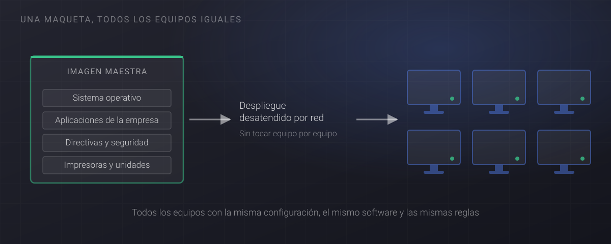
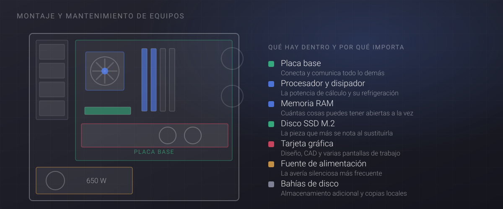
Despliegue funcional de empresas
Abrir una oficina, trasladarla o montar una sede nueva es uno de esos proyectos en los que todo depende de todo: si la fibra llega tarde, no hay red; si no hay red, no hay servidores; y si no hay servidores, el día de la mudanza nadie puede trabajar. Nos hacemos cargo del conjunto y respondemos de la fecha de arranque.
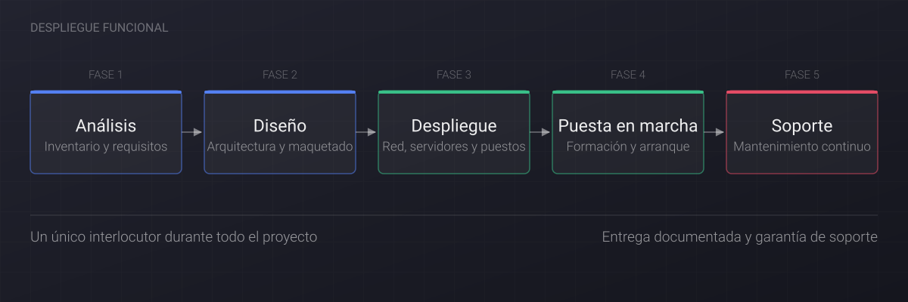
- Cableado estructurado, electrónica de red y cobertura wifi.
- Servidores físicos, virtualización o infraestructura en la nube.
- Puestos de trabajo, telefonía e impresión corporativa.
- Migración de datos y de correo con ventana de parada acordada.
- Copias de seguridad y verificación de restauración antes de la entrega.
- Formación a los usuarios y acompañamiento las primeras semanas.
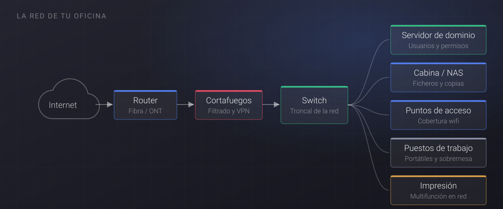
Desarrollo de software a medida
Hay procesos que ningún programa estándar cubre bien, y forzarlos dentro de una herramienta que no encaja sale caro en horas de gente. Cuando ese es el caso, construimos la aplicación que falta: pequeña, centrada en el problema real y conectada con los sistemas que ya usas.
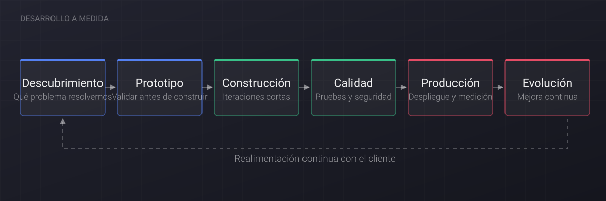
Trabajamos en iteraciones cortas y con algo funcionando pronto, porque una demostración vale más que cien páginas de especificación. El código y la documentación son tuyos desde el primer día.
- Aplicaciones de gestión internas y herramientas de departamento.
- Integraciones entre ERP, CRM, facturación y comercio electrónico.
- Automatización de tareas repetitivas y procesos manuales.
- Paneles de indicadores para dirección, con datos que ya tienes.
- Mantenimiento evolutivo y corrección de errores con soporte continuado.
- Entrega del código fuente, del repositorio y de la documentación técnica.
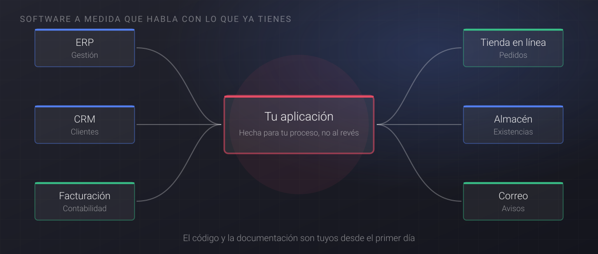